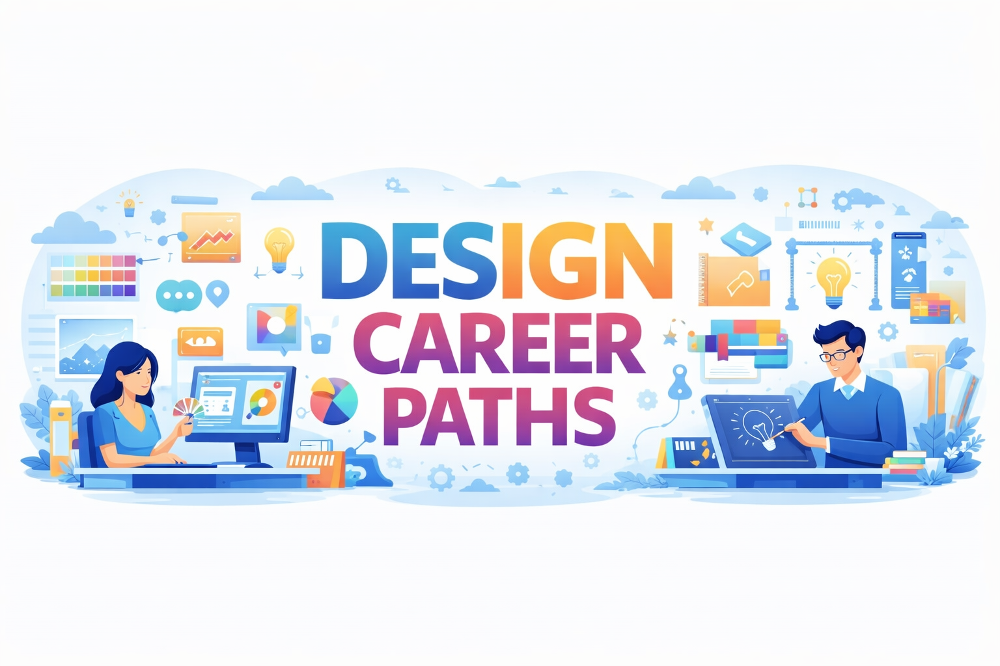
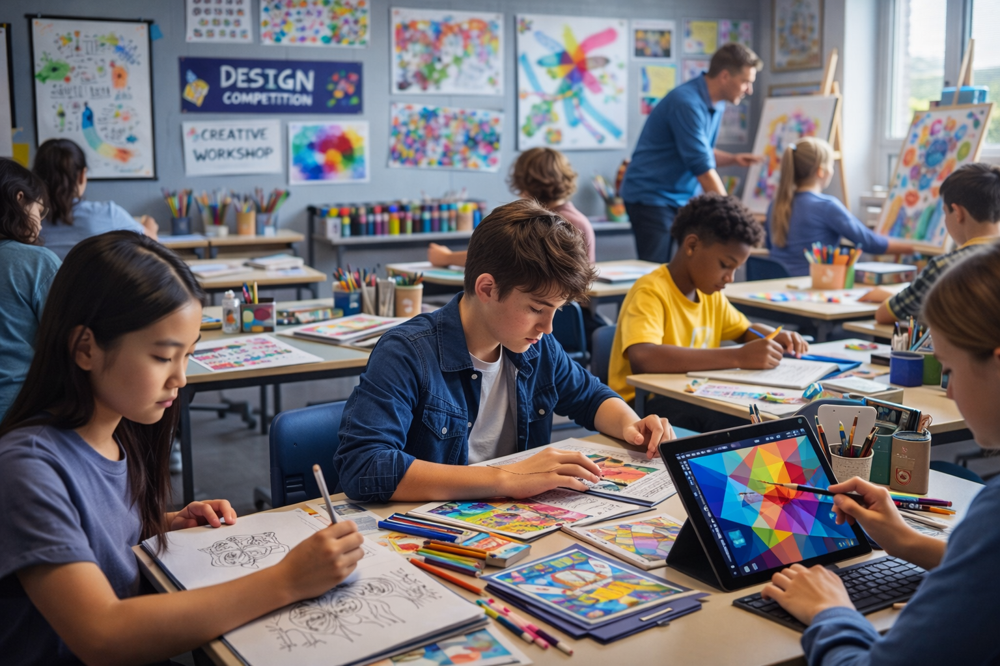
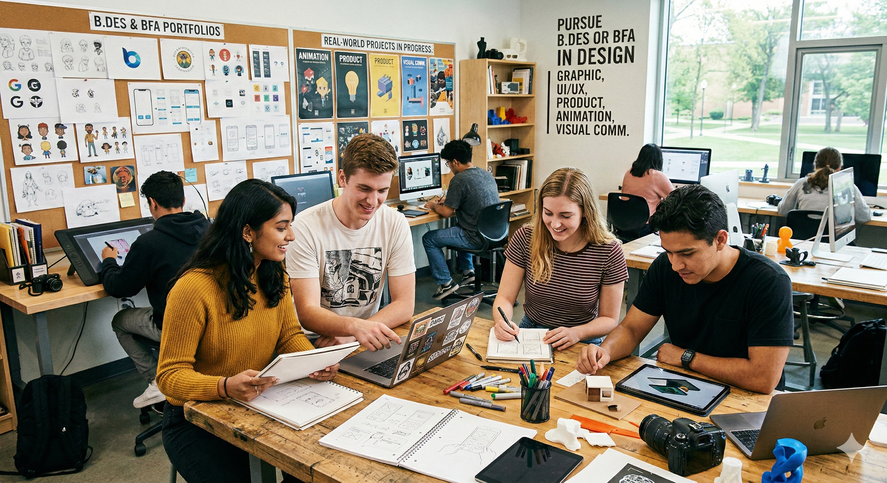
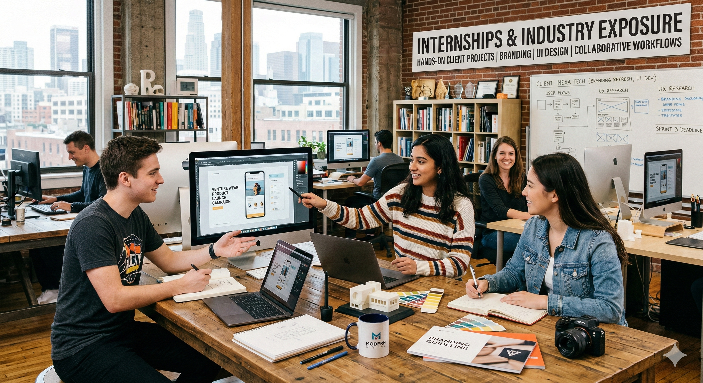
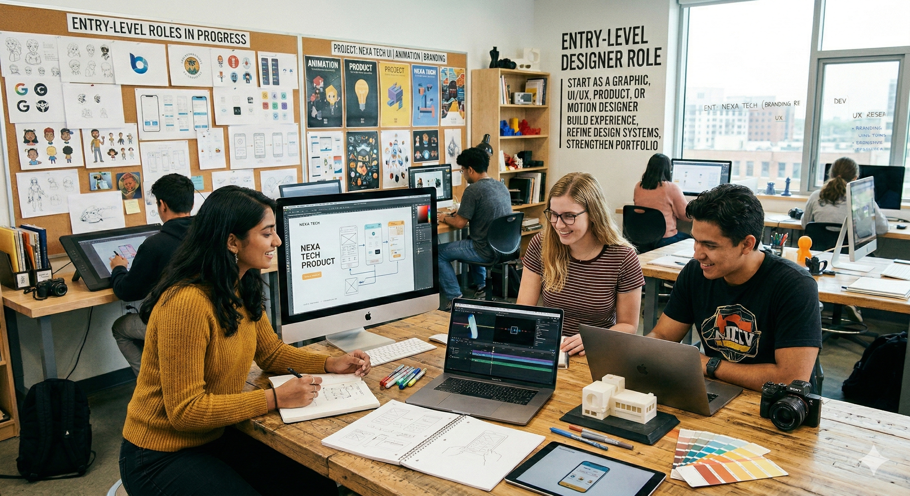
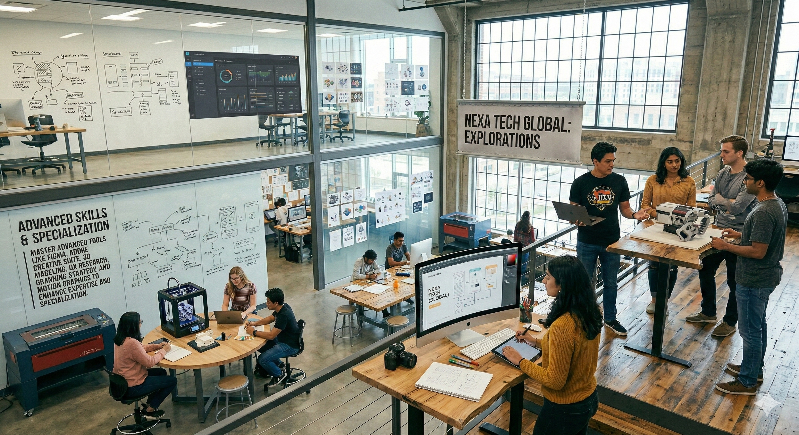

Design is the art of transforming ideas into visual and interactive experiences. Designers create user-friendly interfaces, compelling graphics, innovative products, and meaningful brand identities that impact the world.

Develop creativity through art, sketching, digital tools, and visual storytelling. Participate in design competitions, art exhibitions, and creative workshops.

Pursue B.Des, BFA, or related programs in Graphic Design, UI/UX, Product Design, Animation, or Visual Communication. Focus on portfolio development and real projects.

Work with design studios, startups, or agencies. Gain hands-on experience in client projects, branding, UI design, and collaborative workflows.

Start as a Graphic Designer, UI/UX Designer, Product Designer, or Motion Designer. Build experience, refine design systems, and strengthen your professional portfolio.

Master advanced tools like Figma, Adobe Creative Suite, 3D modeling, UX research, branding strategy, and motion graphics to enhance expertise and specialization.
Advance to Creative Director, Design Lead, UX Strategist, or Entrepreneur. Lead design teams, manage brand vision, and drive innovative creative solutions.